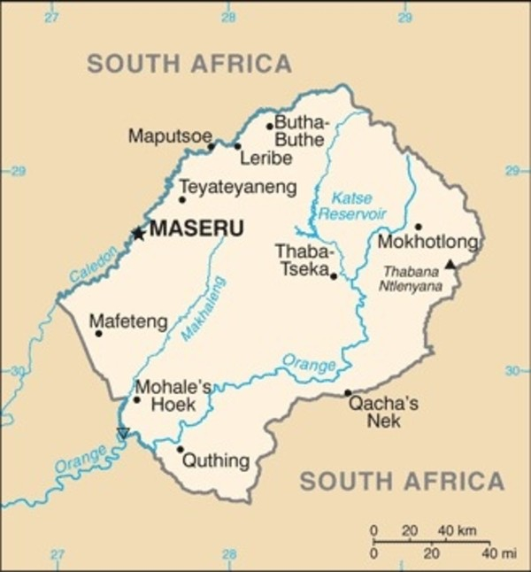
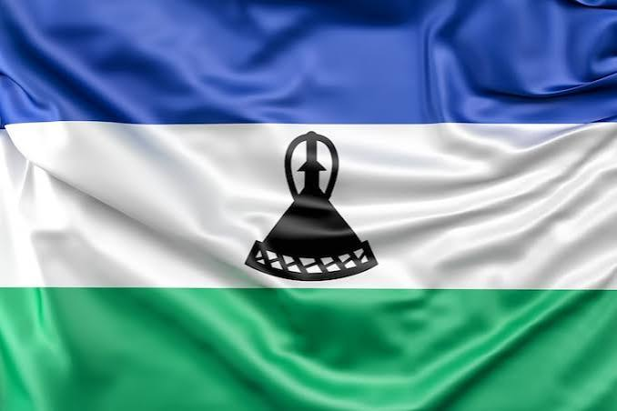
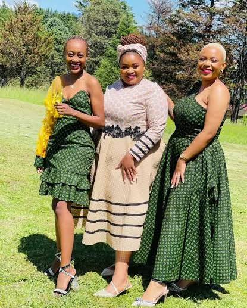
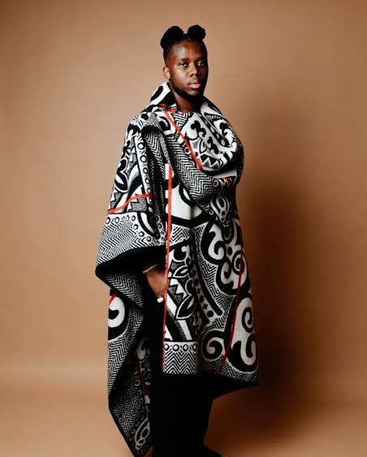
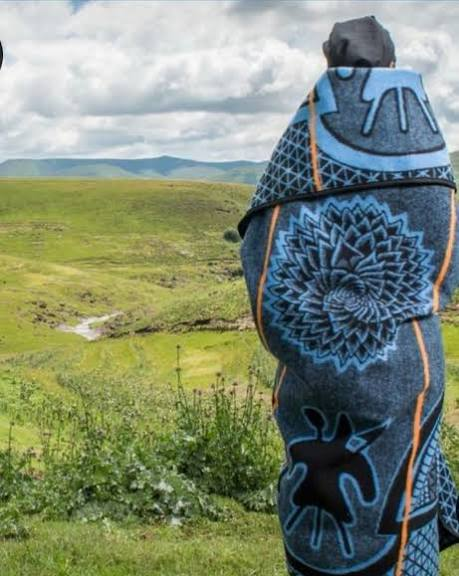
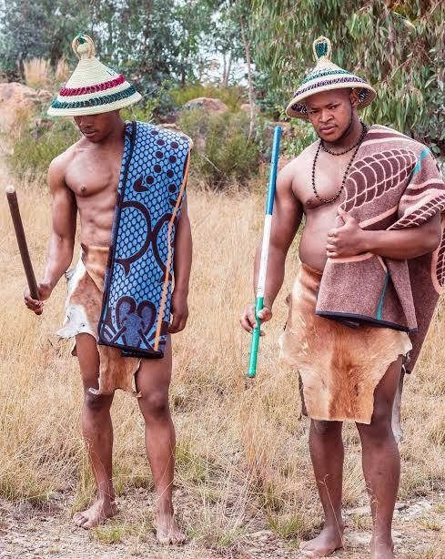
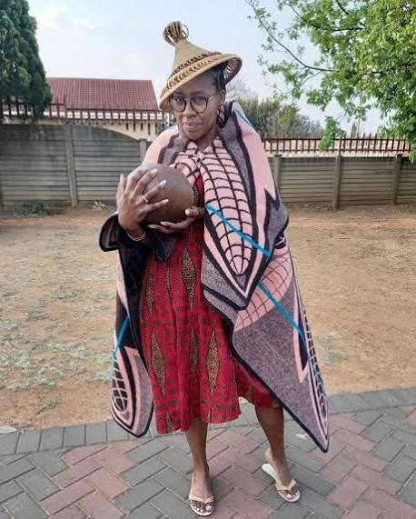
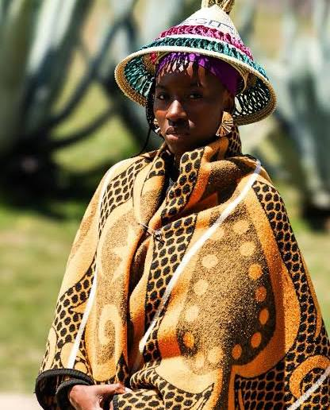

Discover the Heart,Heritage,and Highlands of Lesotho
Tucked high in the Maloti Mountains,Lesotho is a land of dramatic peaks,winding pony trails,and warm Basotho Hospitality.At Lesotho Tourism Company,we don't just show you the sights-we connect with the soul of Southern Africa's highest nation.
In Lesotho,warmth and unity are our best characters.Welcoming guests is a core part of everyday life in Basotho towns and rural villages.
The traditional food is mesmerising and hosts commonly share hearty staples like papa(maize porridge), moroho(leafy greens),meat stews,and fermented or preserved foods.
Cultural villages and lodges like Thaba-Bosiu Cultural Village and nearby lodges offer heritage tours,traditional homesteads,and mountain views. These stays are found in Maseru,Leribe and the highlands.
Lesotho is made of 10 districts.


The flag features three horizontal stripes;blue,white and green with a black mokorotlo. They reflect the motto(Khotso,Pula,Nala)
Blue means Rain and the sky,symbolizing water as vital to life
White Represents peace,reflecting internal harmony and peaceful relations with neighboring South Africa.
Green Represents prosperity,hope,and the fertility of the land.
Black Mokorotlo Represents the Basotho people and Lesotho as a Black Nation
They communicate more with their attire than words.





